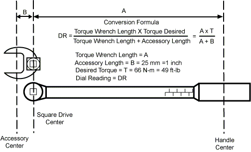
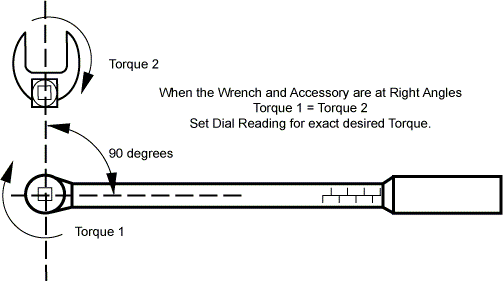
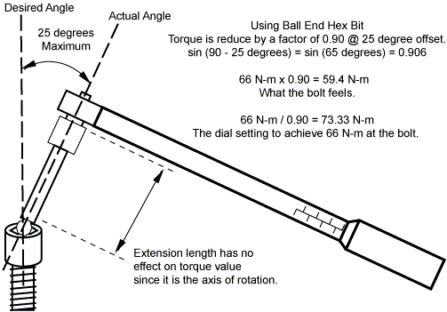

Operating Documentation
Direction 5193574-800, Rev# 22
LightSpeed 7.X Service Methods
Module Version 4.0, Version Date 11/20/08
Operating Documentation |
| Last Revised on: | 21 May 2008 |
This procedure contains the following information:
Section 1, Recommended Torque Wrench Practices
Section 2, General Torque Cross Reference
Section 3, Torque Formula
Section 4, Torque Wrench Accuracy
| ||||
| severe personal injury may occur. | ||||
| Fasteners such as nuts, bolts and screws, and components bolted to the gantry through the use of threaded inserts cannot be repaired in the field. always replace damaged hardware and components with damaged threaded inserts. | ||||
| never attempt to fix hardware, threaded inserts or the threads on components in the field. replace the component or consult field leadership on how to proceed. |
| ||||
| Property damage may occur. All fasteners such as nuts, bolts and screws that hold components to the gantry rotating side should be replaced if they are damaged, to eliminate the possibility of the fastener failing (threads stripping or breakage) which would result in loose components. | ||||
| ||||
| ALL FASTENERS HAVE A TORQUE REQUIREMENT. Default tables should be used only if the service documentation does not specify a torque value. | ||||
Never use a torque wrench to loosen a tightened fastener. Permanent damage of the internal mechanism can occur due to excessive strain.
Always approach the specified torque slowly. This is not a speed wrench.
Hand location is important. Position one hand at the axis of rotation and one hand on the tool handle. This gives the user stability and accurate torque repeatability.
Always approach the desired torque evenly and slowly. If the desired torque is 66 N-m on 4 bolts, then tighten each bolt 50 to 70% of desired value. Then set the wrench to the required torque and tighten slowly until the wrench “Just Clicks”.
Always release the tension on the torque wrench to prevent “spring set” on adjustable or “clicker” type torque wrenches. This will ensure correct torque settings throughout the range of the tool.
Always allow the tool to reach room temperature.
Spring tension is the basis of “Clicker” type torque wrenches.
A spring’s tension changes with temperature.
Calibrate the tool on a regular schedule. Follow established local calibration processes.
Do not drop or shock the tool. Internal damage can occur. Calibration should be performed to ensure accuracy.
Do not attempt to straighten a bent “Beam” or non adjustable wrench. Replace it.
Never use a “Universal Joint” with a torque wrench. The angle of the universal joint can change the torque value by more than 50%.
Always use the torque wrench with a 90 degree angle whenever possible.
Illustration 3 illustrates the effects not being perpendicular.
The 25 degree tilt is the physical limit of a Bondhus Ball End Hex key.
Use the specified torque value for the HV tank mounting fasteners. Do not attempt to calculate the sin angle correction.
There is less than 2% error for up to 10 degrees of tilt from the desired angle.
Minimize the angle as much as possible.
Always clean fastener threads to reduce friction. Cleaning their threads of Loctite or equivalent thread locking compound can be done with using a brass brush, compressed air or both. Fasteners (Nuts, bolts, studs and screws, etc.) should thread easily using finger pressure.
If you cannot clean securing compounds from fastener hardware (nuts, bolts, screws, etc.) replace the used fastener hardware with new fasteners.
If there is reason to doubt the integrity of any hardware fastener, do NOT use (or reuse) the fastener. Replace the fasteners (nut, bolts or screws). Do NOT attempt to repair the threads.
| NOTE: | DO NOT ATTEMPT TO FIELD REPAIR THREADS OF ANY THREADED INSERTS. |
NEVER USE a tap to clean thread inserts or a die to clean studs, bolts or screws. It will damage them requiring replacement.
Never lubricate a fastener unless specifically instructed. Loctite or equivalent thread locking compound is considered in the design. It must be used when specified.
Replace Nylon nuts if they are finger loose.
All cable connectors should be finger tightened by alternating between the two thumbscrews, until snug avoiding excessive over torque. The thumbscrew design includes a screwdriver slot designed to ensure access. All cable thumbscrews are required to be finally tightened by using a torque wrench type screwdriver in accordance to the defined torque specification of 45N-cm, (4 in-lbf) for all #4-40 Thumbscrews and receiver hex standoffs.
When secured properly, cable connectors will still have slight side to side movement. This is a normal condition.
Table 1: Loctite Brand Definitions
| Loctite Type Color/Number | Characteristics | When to use |
| Red (271) | High temperature, high strength for heavy-duty applications. Removable with heat and hand tools. | Used only if specifically called for by number, color, or both. |
| Blue (242) | Locks threaded fasteners against vibration loosening. Removable with hand tools for easy disassembly. | When designators Blue, 242, or both are specified. Or when a procedure states to use a loctite compound but does not specify a loctite brand type. |
| Blue (425) | Used for locking plastic and metal fasteners. Recommended for metal, nylon, polyester and many thermoplastic materials. | Used only if specifically called for by its number designation. |
| Purple (222) | Low Strength. | Used only if specifically called for by number, color, or both. |
| White (565) | General-purpose instant sealant used for tapered and straight/tapered fitting. | Limited use. Used only if specifically called for by number, color, or both. |
| Green (609) | Low Strength. | Used only if specifically called for by number, color, or both. |
The following table is provided as default references only. Use the appropriate replacement procedure to verify the correct torque requirement for each specific fastener.
| ||||
| If the Service documentation does not contain specific torque
values use Table 2 . These default values can then be assumed to
apply. It should also be noted, that some of the cable connector thumbscrews found on and around the DAS assembly on some gantries have a plastic slotted head. The plastic slot is designed to fail (strip out) if excessive torque is used to tighten these connectors. The torque specification for all cable connectors (#4-40 thumbscrew and receiving hex standoffs) is 45N-cm, (4 in-lbf). Engineering recommends that a torque screwdriver should be used on all cable connectors found in the system. | ||||
Table 2: Default Torque Values as Specified by GEMS CT
| FASTENER SIZE | TOOL SIZE HEX KEY | TOOL SIZE SOCKET | TORQUE IN N-M | TORQUE IN LBF-FT | TORQUE IN LBF-IN | TORQUE Kg-cm |
|---|---|---|---|---|---|---|
| M3 | 2.5 mm | 5.5 mm | 1 | -- | 8.9 | 10.3 |
| M4 | 3 mm | 7 mm | 2.3 | 1.7 | 20.4 | 23.5 |
| M6 | 5 mm | 10 mm | 7.9 | 5.8 | 70 | 80.8 |
| M8 | 6 mm | 13 mm | 19 | 14 | 168 | 193.8 |
| M10 | 8 mm | 17 mm | 38.4 | 28.3 | 339.6 | 391.8 |
| M12 | 10 mm | 18 mm | 66.4 | 48.9 | 586.8 | 677.1 |
| M14 | 12mm | -- | 105.9 | 78.1 | 937.2 | 1081.4 |
| M16 | 14 mm | 24 mm | 160 | 117.8 | -- | -- |
Many service operations on this CT scanner require a torque wrench. The use of a torque wrench may appear complicated because there are several standards and metrics. Using conversion factors can simplify that task.
First, only use a calibrated torque wrench. Use a torque wrench that is on a Calibration schedule and is approved by GEMS-AM Service. The kit that can be used that is on a regular Calibration schedule is kit number 46-268445G1. This torque wrench kit has wrenches that measure inch pounds and foot pounds.
Second, make any necessary conversions for the torque wrench you are using. The units of measure are typically marked on most torque wrenches. To make conversions to Kg-cm and Newton meters, use the following conversion factors.
TORQUE CONVERSION FACTORS
To convert Kgcm to foot-lbs, multiply Kgcm by 0.07233
To convert Kgcm to inch-lbs, multiply Kgcm by 0.8679
To convert Kg-cm to N-m, multiply Kgcm by 0.0981
To convert N-m to inch-lbs, multiply N-m by 8.8508
To convert N-m to foot-lbs, multiply N-m by 0.73756
To convert foot-lbs to N-m, multiply lbf-ft by 1.3558
To convert foot-lbs to kg-m, multiply lbf-ft by 0.1383
To convert inch-lbs to N-m, multiply lbf-in by 0.11298
To convert inch-lbs to Kg-cm, multiply lbf-in by 1.1539
T = R x F x sin (angle)
Where:
T = Torque in N-m
R = Distance from axis of rotation
F = Force Applied
Sin(90) = 1
From this formula we can see that it is necessary to apply the force at a 90 degree angle to the axis of rotation to achieve accurate fastener torque. This same principle can be applied when using accessories with the torque wrench. See Illustration 1 and Illustration 2.
| NOTE: | The length of a standard square drive extension has no effect on torque since it is along the axis of rotation. See Illustration 3. |
Illustration 1: Formula to Adjust for Straight Line Accessory

Illustration 2: Formula for 90 Degree Accessory Usage

Illustration 3: Formula when not at 90 Degree to Axis of Rotation

It needs to be clearly understood that “torque” is an indirect measure of tension or “preload force”. The components of a bolted joint can be defined as,
Preload force (Fp), bolt stretch.
Tension force (Ft), resistance of bolted materials.
Clamping force (Fc), difference of preload and tension forces.
Shear force (Fs), sideways or sliding force of bolted materials.
Therefore, Fc = Fp - Ft
With shear force, a properly designed and tightened joint, the friction between the bolted materials absorbs the stress and the bolt itself feels little to no load.
There are other factors that need to be considered as well. Fastener material has a large effect on torque versus preload force. Lubricants can also significantly change the effects of torque versus preload force. Anti-seize compounds can reduce the needed torque up to 20%.
In short, torque measurement is an economical method of achieving a properly tensioned joint. Other methods are available, but training needs and tool expense increase.
| NOTE: | CT Engineering has taken into account the variability of using torque wrenches. The design standard applied is a safety factor of 8 on all fasteners, after the “G Force” load is calculated for each component. This is to ensure clamping force is maintained without exceeding the strength of the fastener. |
Various studies have been performed on the effectiveness of torque wrench accuracy. The following conclusions have been made (see Table 3).
Table 3: Torque Method Accuracy
| PRELOAD MEASURING METHOD | ACTUAL PRELOAD FORCE ERROR |
|---|---|
| “Feeling” | > 35% |
| Torque Wrench | +/- 25% |
| Angle Torquing | +/- 15% |
| Indicating Washer | +/- 10% |
| Fastener Elongation | +/- 5% |
| Strain Gauge | +/- 1% |
As demonstrated in Table 3, not using a torque wrench is the worst case event. The “feeling” method also changes with the tool. A 1/4” drive “feels” different than a 1/2” drive.